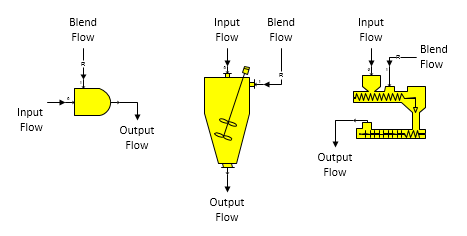

Blender Blender stations are used to blend one flow stream into another. For example, blenders are used for mixing (blending) syrup with sugar crystals to produce magma, blending condensate with steam to remove superheat, blending milk of lime with juice for juice liming, etc.
A blender station has two input flows as shown for each of the shapes in the figure below. The input flow goes into port 0 and the blend flow goes into port 1 (zoom in on the shape to see the port identifiers). The orientation of the blender can be changed easily using the Visio shape rotation and/or flipping features, but the text will stay parallel to the input and output flows.

General Features The blend (port 1) flow is controlled by setting the properties for the blender to give either a weight ratio of the blend flow to the input (port 0) flow rate (or, one of its components), to a specified quantity of blend flow (Blend Quantity), or to a set value in the output flow; for example, Non-Sugar to Water Ratio, Quantity, Dry Substance, Purity, Temperature, or Component percent. The input flow goes to input port 0 (zoom in on the blender shape to see the input port numbering). The blend flow goes to input port 1 and it will always be made a required flow by Sugars; that is,the blend flow rate will be calculated by Sugars.
Change of phase is considered for water (that is, water may vaporize, or condense). Sucrose crystals may dissolve, but not grow. Blender stations can be used to add dilution water to a flow stream (for example, molasses dilution water). Also, a blender can be used for pressure feedback when either of the input flows is a pressure feedback flow and the other flow defines the pressure to be fed back. And, if both input flows are pressure feedback flows, the output flow will be a pressure feedback flow (same as a Receiver station).
The output flow pressure from a blender station will be equal to the minimum of the pressures for the blend and primary flows - the same as for a receiver station (see Receiver Features). And, the temperature of the output flow will be a result of the heat contents of the blend and input flows. Other features of a blender station are similar to a receiver station; for example, flow components and quantity of the output flow are a result of the blend and input flows, and the input flows can be pressure feedback flows. If the input flow is a pressure feedback flow, the pressure fed back will be the pressure of the blend flow into the blender. Conversely, if the blend flow is a pressure feedback flow and the input flow is not, then the blend flow pressure will be set to the input flow pressure. If the output flow from a blender is a pressure feedback flow and the flow leaves the model, then the pressure for the flow and the feedback pressure will be set to the atmospheric pressure (see Program Overview > User Interface).
The output flow solubility coefficients will be a weight-weighted-average of the input and blend flows if the solubility function coefficients for the blend flow are different from the input flow.